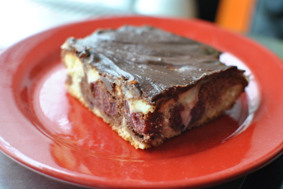

Donauwelle

- Zubereitung: ca. 60 Minuten
- Backzeit: ca. 40 Minuten
- Kühlzeit: ca. 30 Minuten
- Für 1 Backblech
Zutaten
Teig unten
- 250 g Butter
- 250 g Zucker
- 350 g Mehl
- 6 Eier
- Prise Salz
- 1 Pck. Backpulver
Teig oben
- 2 EL Kakao
- 2 EL Zucker
- 2 EL Milch
- 1 EL Rum
Belag
- 2 Gläser Schattenmorellen
- 1/2 l Milch
- 1 Pck. Vanillepudding
- 100 g Zucker
- 250 g Butter
- Kuvertüre
Zubereitung
- Aus den Zutaten den unteren Teig zubereiten. Die Hälfte des Teigs auf das Backblech geben. Den restlichen Teig mit den Zutaten für den oberen Teig vermischen und auf die erste Teighälfte geben. Die abgetropften Schattenmorellen auf den Teig geben
und diesen im vorgeheizten Backofen bei 180° Celsius ca. 40 Minuten backen. Den Teig auskühlen lassen.
- Den Pudding mit Milch und Zucker kochen. Die Butter unterrühren, sobald beides die gleiche Temperatur hat. Die Creme-Masse auf den Teig geben und mit der Kuvertüre bestreichen.